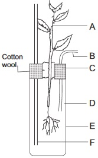
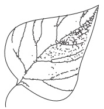
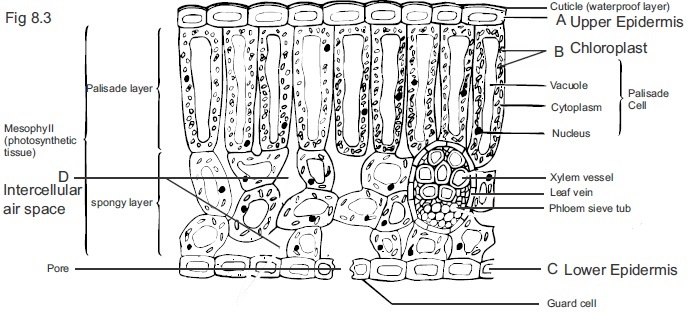
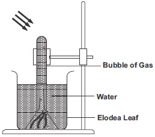
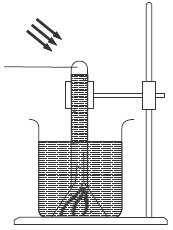
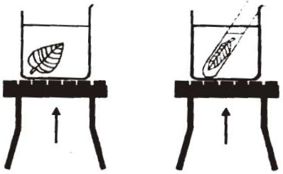
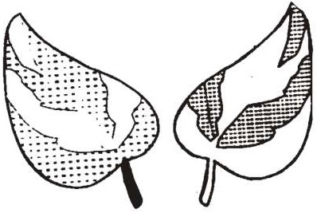
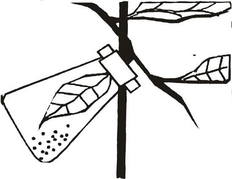
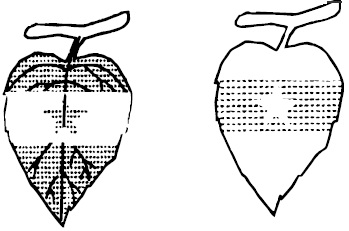

Nutrition as one of the life process
in living things.
Plant nutrition: Photosynthesis.
Chemistry of photosynthesis.
Conditions necessary for
photosynthesis and products of
photosynthesis.
Leaf adaptation to photosynthesis.
Importance of photosynthesis.
Mineral nutrition in plants.
fig8.1 Mineral nutrition

fig8.2

Background Information
Nutrition is the series of processes by which living things obtain foods and use them to
provide energy and materials fortheir life activities. It is an anabolic process. (Building up process).
Nutrition in plants is an Autotrophic mode of nutrition (building complex organic
substances from simple inorganic materials)
Nutrition processes in green plants involve photosynthesis and mineral uptake and utilization.
Photosynthesis
Photosynthesis is the process by which green plants use carbon dioxide and waterto
produce sugar in the presence ofchlorophyll using solar energy.
Although the chemistry of photosynthesis can be summarized in the chemical
equation:
6Co2 + 6H → C6H12O6+6O2
Details of the process are really complex. lt involves two stages of reactions called lightand dark reactions.
Light Reaction (Photophase)
During the light reaction, light energy excites the electrons of chlorophyll and the
accessory pigments.
These excited electrons are passed along an electron transport chain, where
some ofthe energy is captured inATP (Adenosine triphosphate)
During the reaction, the bonds of water molecule are split, producing hydrogen
and oxygen (Photolysis of water). The hydrogen is accepted by NADP (Nicotinamide
Adenine Dinucleotide phosphate) thus fomwing NADPH. Oxygen is released as a bye
product.
Dark Reaction
The dark reaction involves a process of carbon fixation, which occurs in the
stoma in the mesophyll. During this process, the NADPH and ATP formed during the
light reaction are used to power a complete series of reactions, which is catalyzed by enzymes in the stroma. In carbon fixation (dark reaction) carbon from molecules of carbon (IV) oxide combines with hydrogen from NADPHto form glucose.
Conditions and Materials Necessary for Photosynthesis
The presence of sunlight and chlorophyll are conditions necessary for
photosynthesis. Carbondioxide and water are materials necessary in photosynthesis.
Leaves Adaptation to Photosynthesis
Although all the green parts of a plant can carry out photosynthesis, the leaves
are the major photosynthetic organs. The following are its adaptive features for
photosynthesis.
Numerous chloroplast— structures which contain chlorophyll.
The presence ofstomata and air spaces in leaves which provide pathways
fordiffusions of oxygen into and carbondioxide out ofthe leaf.
Network of veins by which water circulates to cells of the leaf.
Flat broad surface of lea ves for adequa te sunlight receptivity.
The perpendicular positioning ofthe leaf to the sun with little overlapping.
Rates of photosynthesis can be affected by light intensity , temperature, relative
humidity and amount of water available.
Fate of Photosynthetic Products and Importance of
Photosynthesis to Life
The products of photosynthesis are utilized in the following ways;
As a source cf food (i.e. the sugar and starch) for plants and animals
As starting point forthe building ofother products like protein.
NUTRIENT CYCLES
The continuous movement or circulation of atoms of essential elements from the environment is called nutrient cycle.
A typical example of nutrient cycle in plants is Nitrogen Cycle. Nitrogen cycle is the natural continuous circulation
of nitrogen atoms through the atmosphere, living things, soil and water in a cyclic manner.
General Questions
1. The diagram below(fig 8.3) is the internal structure of a leaf showing its transverse section, observe the structure and answer the
questions that follow
Label the diagram in figure 8.3. for part tagged A B C and D
Identify and write the structures where photosynthesis occurs
Teacher's attention required
What is the use of water in the substomatal air chamber
Distinguish between the palisade mesophyll and the spongy mesophyll
Teacher's attention required
2. Write four structural modifications of the leaf for photosynthetic activities(I)
Teacher's attention required
fig8.3

3. Figure 8.1 shows apparatus for water culture experiment. Observe the diagram carefully and answer these questions
Label the diagram according to the letters used
Teacher's attention required
4a. What is water culture experiment used for
To Study growth in plants
To find out importance of photosynthesis
To study the effects of mineral deficiency(or their importance in plants
4b. What is the function of the cuttonwool in the water culture experiment
To prevent stem of the experiment plant from rotting
To tighten the plant stem on the clamp
To help the plant to be free from undue pressure
5.
and
are the two products of photosynthesis.
6. The splitting of water during the light reaction in photosynthesis is called
7.
in green parts of plants absorbs or captures energy from the sun for photosynthesis.
8. When a plant is kept in total darkness for a few days, its leaf when tested for starch will prove negative because
Photosynthesis did not take place due to absence of sunlight
Not much oxygen is give off
Carbondioxide was not available for photosynthesis during darkness
9. is necessary for photosynthesis.
10. There are leaves of plants that appear multi coloured with parts green and others yellow or white such leaves are called
leaves.
11. A leaf that is yellow as a result of mineral deficiency is said to be
12. The conversion of atmospheric nitrogen to amino compounds and protein by the action of bacteria and fungi is called
13. During Nitrification Ammonia is converted to nitrite by Nitrosomonas bacteria while nitrites are converted to nitrates by
bacteria.
Complete this table
ELEMENT LACKING
RESULT OFDEFICIENCY
ROLE OF THE ELEMENT IN PLANT
(14) Surlphur
constituent of certain proteins in the cell protaplasm
Nitrogen
poor growth, leaves become decoloured to orange or brown
Phosphorus
Iron
Teacher's attention required
Teacher's attention is required for all the answers in the followng practical activities
PRACTICAL ACTIVITIES
Problems Under Investigation: To find out the bye products of photosynthesis.
Experiment (i): oxygen as one of the bye-products of photosynthesis. Material / Apparatus required: Freshly collected water plant (example elodea) ,two test tubes, two beakers, sodium or potassium
hydrogen trixocarbonate IV and water, filter funnel, lump of plasticine or clay, retort stand and clamp and wooden splint.
Procedure in steps
Place the plant under a glass filter funnel.
Rest the funnel securely on the beaker by means of plasticine, which has been inside a sink or bucket of water as shown in the
diagram.
Fill a test tube with water and invert it over the arm of the funnel.
Remove the assembled apparatus from under water.
Add some sodium or potassium hydrogen trixocarbonate (IV) to the beaker of water. Stir gently until the trixocarbonate IV is
dissolved.
Label the apparatus A and leave it under sunlight for a few hours.
Set up a similar experimental set up as a control but place it in the dark and label it as C.
After few hours test for the presence of oxygen in the test tubes using a glowing splint.
Questions:
State your observations on the surface of the leaves of the experiments
State your observation on inserting glowing splinter into test tube A and test tube B respectively.
fig8.4 Experiment A.

fig8.4b Experiment B.

Conclusion: What conclusions can you draw from the above experiment?
Label the diagrams of the experimental set up.
What is the use of the control experiment and what factor is the variable?
Why was sodium or potassium hydrogen trixocarbonate (IV) added at the beginning of the experiment?
Why was the experimental set up under water?
Experiment 2: To find out if starch is a product of photosynthesis.
Materials /Apparatus required: Alcohol, iodine, test, tube beaker, water, white slab, petri-dish, Bunsen burner and tripod stand ,and
leaves of a potted plant e.g. cocoyam leaf (the leaf in its plant must have been exposed to sunlight for hours.
Experimental procedure in steps:
Dip the leaf in boiling water for half a minute to kill the cells.
Dip the leaf in a hot alcohol, which is contained in a test tube being boiled by water bath as shown. Caution - Because of the
inflammability of alcohol, care should be taken not to allow the test tube containing the alcohol to touch the bottom of the water
bath. Also the test tube should be occasionally lifted out of water to avoid over heating as that can result to sudden spurting of
the hot alcohol.
Dip the decolorized leaf in hot water to soften it and wash it in cold water to remove remaining traces of alcohol.
Place the leaf on a tile or petri dish and add drops of iodine solution to it
Questions
1. Record your observations
2. Briefly describe how you can set up a control experiment for experiment 2.
3. State two reasons why leaf cells has to be killed in boiling water.
4. Why must the leaf for experiment 2 be plucked after its plant has been exposed to sunlight for few hours?
fig8.5

5. What conclusions can you draw from the test and control Experiments 2.
6. State the food substance produced immediately during photosynthesis and why is the product not tested for in the leaf to show that
photosynthesis has occurred.
PROBLEM UNDER INVESTIGATION :
Conditions necessary for photosynthesis. Experiment 3
Materials required: Variegated leaf plucked after its plant has been exposed to sunlight for some hours, 70% ethanol,iodine
solution, petri dishes, thin white sheet of paper, transparent sheet of paper and pencil.
Experimental procedure in steps:
Take the Variegated leaf and place a transparent sheet of paper over it on a table.
Draw the outline of the edges of the leaf. Also draw the outline of the green
areas of the leaf.
Test the leaf for starch.
Place the traced drawing again over the leaf.
Questions
1. Write your observation
2. Write the factor under investigation in the Experiment 3
3. What possible conclusion can you draw from your observation
fig8.6

4. Describe how you can set up a control experiment to Experiment 3
Experiment 4 : To show that carbon(IV) oxide is necessary for photosynthesis.
Materials required: A potted plant, whose leaves have been destarched, retort stand and clamp, caustic soda solution (Sodium hydroxide),
conical flask, Vaseline, split cork, materials and apparatus to test for starch in a leaf.
Experimental procedure in steps:
Keep the detached plant in the dark for several hours until
you confirm it to be destarched by testing it for starch.
Expose some of the plant’s leaves to air and sun (for several hours)
with one leaf dipped inside the conical flask that contains caustic
soda solution. Make sure the flask neck
is well corked and made air tight using Vaseline.
Take one of the leaves that have been exposed to light and test
it for starch.
Take the leaf that is dipped into the flask and test it for starch.
fig8.7

Questions
1. Write your observations in steps 3 and 4.
Steps 3
Steps 4
2. What was the role of caustic soda in the experiment?
3. Write the possible occurrence or observation in Step 4 if the caustic soda were replaced with sodium hydrogen trixocarbonate (IV)
(sodium bicarbonate)
4. What conclusions can you draw from your observations in Steps 3 and 4.
5. In your practical notebook, draw a labeled diagram to show another way of carrying out Experiment 4
Experiment 5. To show that a certain factor is necessary for photosynthesis.
Materials/Apparatus required: Apotted plant, paper clips, two stripes of black paper, pair of scissors, materials and apparatus for testing the
presence of starch in a leaf
Experimental procedure in steps:
Make a hole of any shape on the surface
of the black paper strip.
Clip the paper strip with hole on the upper
surface of a leaf of the potted plant.
Make sure the plant is well watered
and is destarched.
Place the plant under sunlight for about
4 hours.
Detach the leaf to which has been
clipped the black paperstrip with hole and
test the leaf for starch after removing the paper.
fig8.8

Questions
1. Record your observation in Step 5
2. What factor is being shown to be necessary for photosynthesis from your observation in Experiment 5?
3. Why is it good to start the experiment early in the morning?
4. Label the diagrams of leaves in Experiment 5 (in the space above) showing the portions where there is starch and portions where
there is no starch. Is the colour of the part where starch is not present green? If not how does the portion look like? (label it in the
drawing)?
5. What is the use of black paper in the experiment?
PROJECT/CHALLENGE
Check up the experiments on plant growth performed by the Belgian Scientist Jan Baptist Van Helmont.
Design an experiment to demonstrate his result using a fast growing plant.